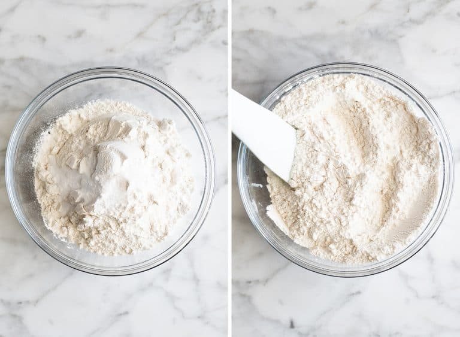
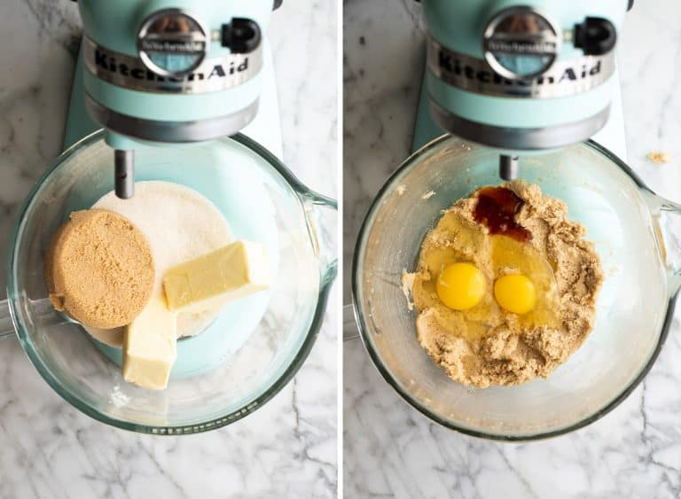
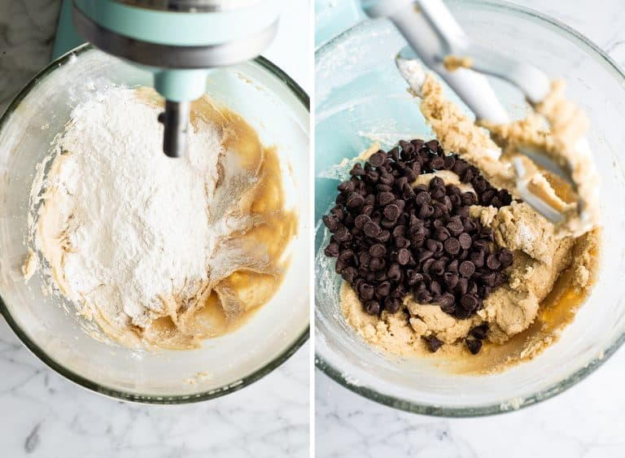
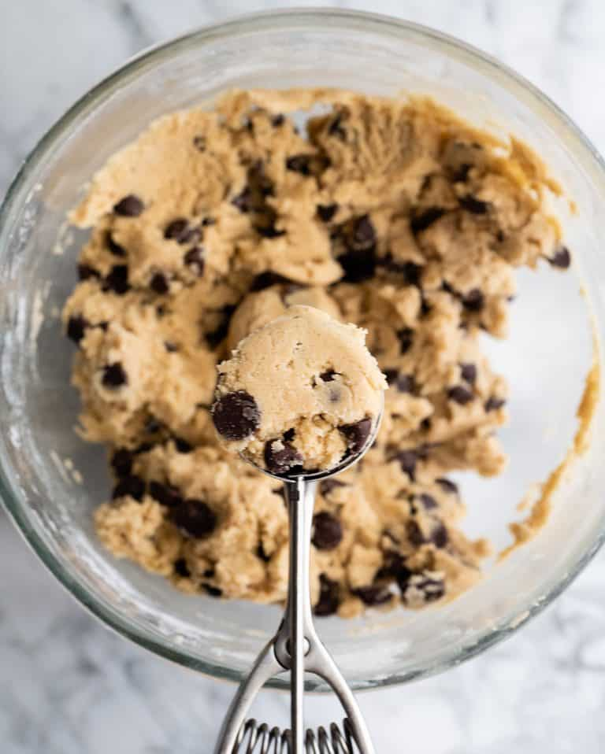

The recipe for these chocolate chip cookies is the best ever! No strange components, no chilling period, etc. It's just a straightforward, easy-to-make, incredibly delicious chocolate chip cookie that bakes up perfectly every single time.
Best Chocolate Chip Cookies

Prep: 20 mins Cook: 10 mins Additional: 30 mins Total: 1 hr Servings: 24 Yield: 4 dozen
Ingredient of Chocolate Chip Cookies
1 cup butter softened | 1 cup white sugar | 1 cup packed brown sugar| 2 eggs| 2 teaspoons vanilla extract| 1 teaspoon baking soda| 2 teaspoons hot water| ½ teaspoon salt| 3 cups all-purpose flour| 2 cups semisweet chocolate chips| 1 cup chopped walnuts
How to Make Chocolate Chip Cookies
Let's walk through how to make chocolate chip cookies step-by-step!
Preheat oven to 350 degrees F (175 degrees C).
Cream together the butter, white sugar, and brown sugar until smooth.
Beat in the eggs one at a time, then stir in the vanilla. Dissolve baking soda in hot water.
Add to batter along with salt. Stir in flour, chocolate chips, and nuts.
Drop by large spoonfuls onto ungreased pans. Bake for about 10 minutes in the preheated oven, or until edges are nicely browned.

YOUR COOKIES IS DONE!